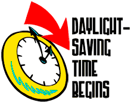

Daylight Saving Time
Most of the United States begin daylight savings at 2.00am on second sunday in March and reverts to standard
time on first Sunday in November.In the U.S,each time zone switches at a different time.In European Union,Summer
Time begins and ends at 1.00am Universal Time(Greenwich Mean Time )
